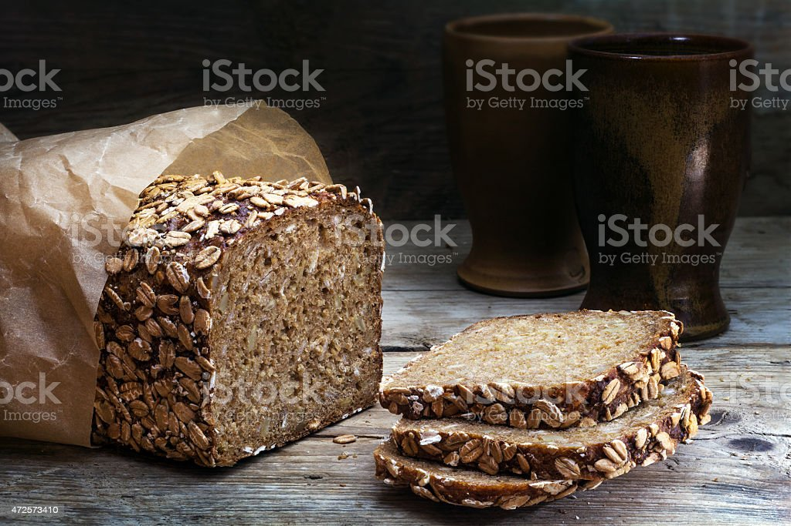

Bread

Description
Basic food for basic needs; quite grainy, in fact
Ingredients
- 1 cup warm water
- 3 tbsp sugar
- 1,5 tsp salt
- 3 cups flour
- 2,25 tsp active dry yeast
Steps
- Mix water, sugar, salt, oil, flour and yeast.
- Put it into a baking machine.
- Let the machine do the rest.
- Eat bread.